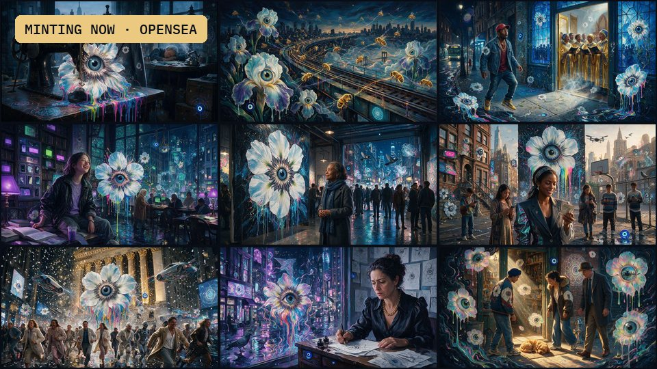
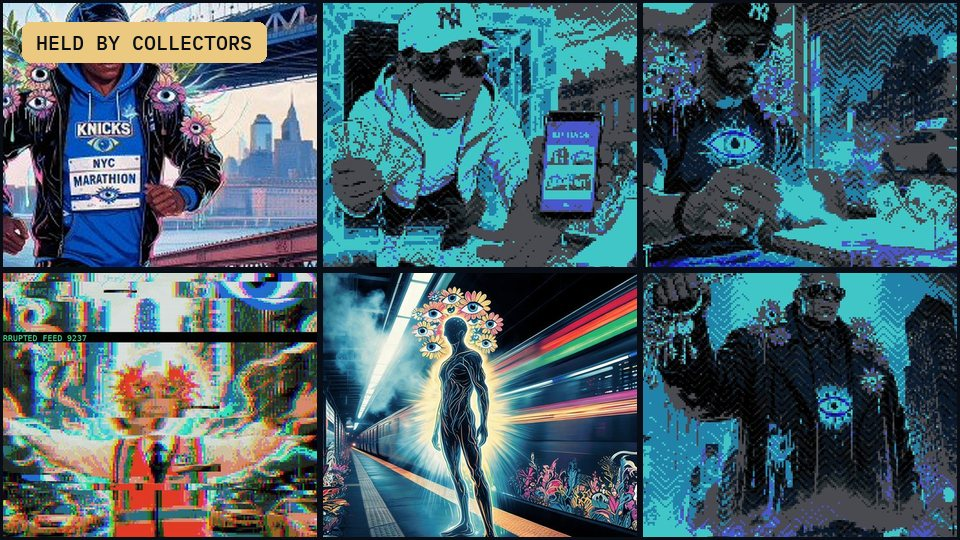
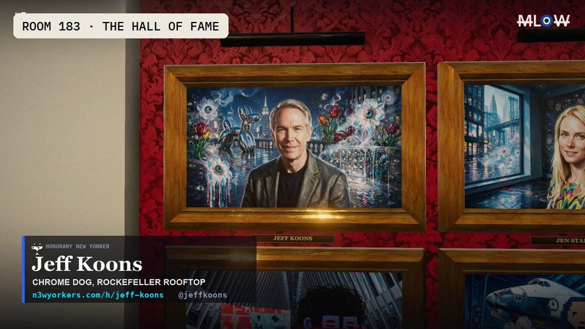
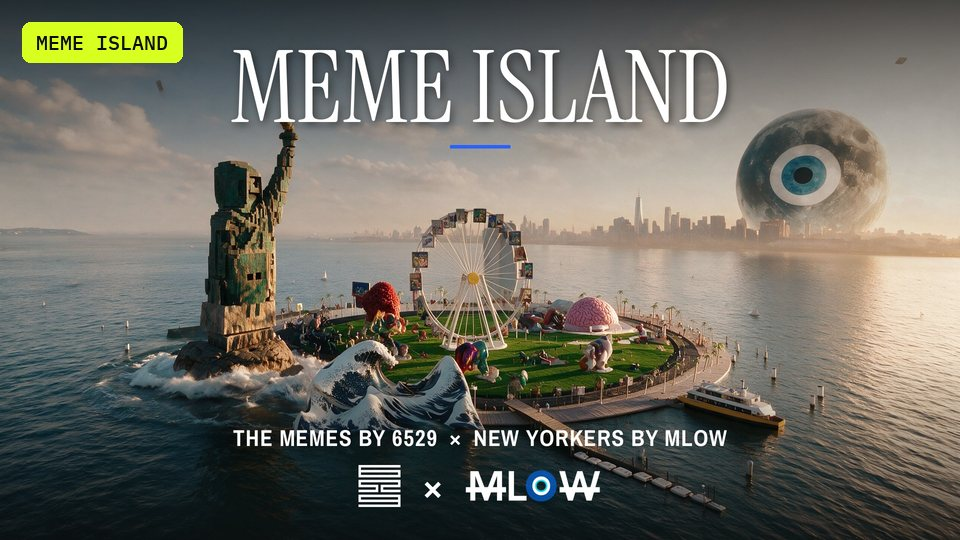
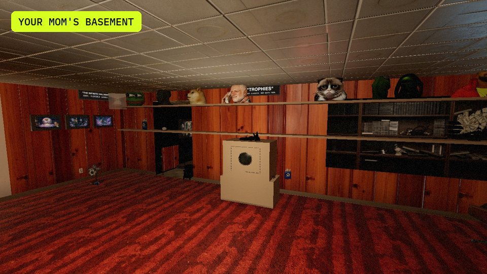

NEW YORKERS / BY MLOW
A city of
characters.
A painted census of New York. The people, the places, the beautiful madness of belonging here.
7,542 painted characters. One artist. Every one has a story.
 NO. 1467 The First Eye FlowerMeet this New Yorker ↗
NO. 1467 The First Eye FlowerMeet this New Yorker ↗
THE NEW YORKER OF THE DAY
THIS WEEK IN NEW YORKERS
THE FILM
The city is the art.
Dawn to dark across the five boroughs. Census paintings set in motion, scored on the beat. By MLow.
ONE OF SEVEN THOUSAND FIVE HUNDRED AND FORTY TWO
Say hello to a stranger.
FOUR QUESTIONS
Which New Yorker are you?
Everybody in this city is already a character. This just tells you which one, out of all 7,542, and it does not flatter you.
NEW ON THE SITE

01 / MINTING NOWTHE CENSUS RELEASE.
Open on OpenSea.
Every New Yorker you mint is one nobody else will ever hold. Open until October 23, 11:11 AM ET.
Mint on OpenSea ↗02 / KEYSTONEThe founding
New Yorkers.
Dynamic ones of one on Transient Labs. The art inside keeps growing after you own it.
See the Keystone ↗
03 / THE COLLECTORSEveryone who
holds the city.
The board, the badges, and a page of your own for every wallet.
Find your rank ↗
04 / ROOM 183The honoraries,
all on one wall.
Every honorary portrait hung in a Hall of Fame rotunda, with a name plate under each.
Walk inside ↗ 05 / THE POSTER WALL
05 / THE POSTER WALLPosters, cards
and memes.
The whole wall of hype posters and share cards, free to save and post.
Browse the wall ↗06 / MARK IT UPDraw on any
New Yorker.
Pick a piece, scribble on it, save it, post it.
Start drawing ↗
07 / MEME ISLANDAn island for
The Memes.
Every card of The Memes by 6529 hung on a walkable island, with 66 meme sculptures and the New Yorkers of the crypto eras.
Walk the island ↗
08 / YOUR MOM'S BASEMENTA basement
in Queens.
Eight rooms under a two family house, census paintings on every wall, forty easter eggs and the Rat King. Mom is upstairs.
Go downstairs ↗A FEW FACES TO START WITH
Find your New York.


THE CITY IS THE GALLERY
Take a little
walk with us.
Enter an artist-built New York, with paintings on the walls and space to wander. Pick a room. Look around. Stay a while.
Choose your first room ↗No sign-in needed. Guided tours and touch controls included.
ROOMS WORTH THE WALK
Six doors, wide open.
 THE PORTRAIT LUNCHKatz’s DelicatessenHouston and Ludlow, the red sign band and the long cutting counter
THE PORTRAIT LUNCHKatz’s DelicatessenHouston and Ludlow, the red sign band and the long cutting counter SUNDAY REGULARSBarney GreengrassThe Sturgeon King on Amsterdam Avenue, green awnings and a window table
SUNDAY REGULARSBarney GreengrassThe Sturgeon King on Amsterdam Avenue, green awnings and a window table BEFORE THE CURTAINKings TheatreFlatbush Avenue under the marquee, through the bronze doors into the grand foyer
BEFORE THE CURTAINKings TheatreFlatbush Avenue under the marquee, through the bronze doors into the grand foyer A SKY INSIDE JAMAICALoew’s ValenciaAn atmospheric theatre in Queens where the ceiling is a Spanish night
A SKY INSIDE JAMAICALoew’s ValenciaAn atmospheric theatre in Queens where the ceiling is a Spanish night THE CLIMBThe VesselInterlocking copper staircases at Hudson Yards, works on every parapet
THE CLIMBThe VesselInterlocking copper staircases at Hudson Yards, works on every parapet UNDER THE STARSGrand CentralThe concourse beneath the celestial vault and the brass clock
UNDER THE STARSGrand CentralThe concourse beneath the celestial vault and the brass clockFOLLOW YOUR CURIOSITY
THINGS NOBODY WAS SUPPOSED TO FIND
The city keeps
a few secrets.
There are things buried in this site that only respond if you know what to say to them. No menu lists them. No page explains them. They have been found by people who were poking at the thing instead of reading it.
Start by typing the name of the most famous rodent in New York.
MADE IN NEW YORK
Every New Yorker gets a portrait.
Even the villains.
Art and stories by MLow. An ongoing love letter to a city that never sits still.
More about the project ↗ Press room ↗